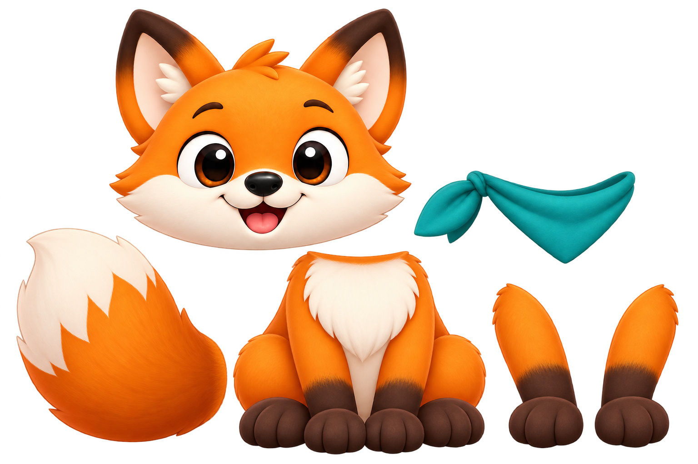
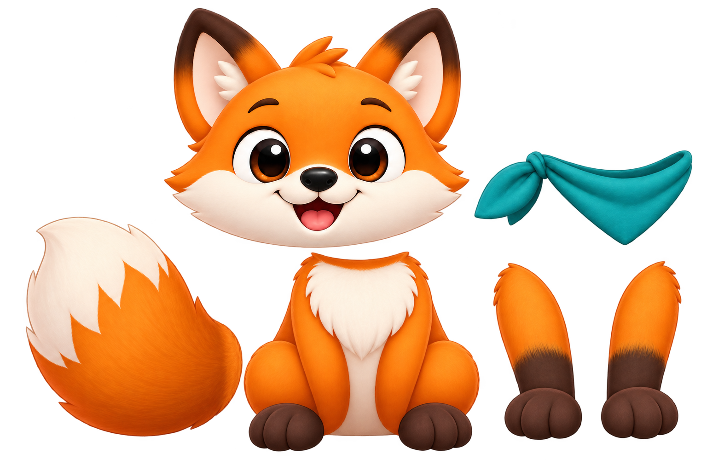
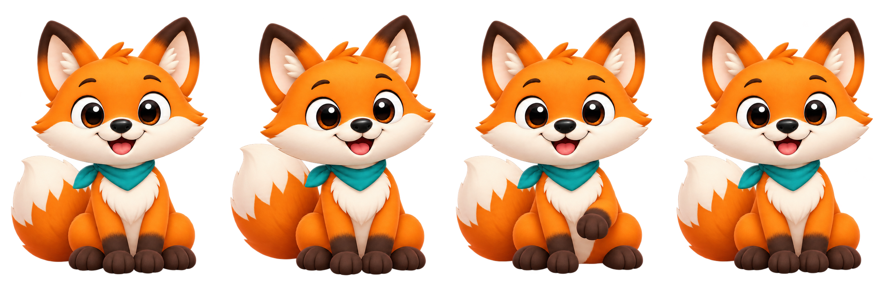
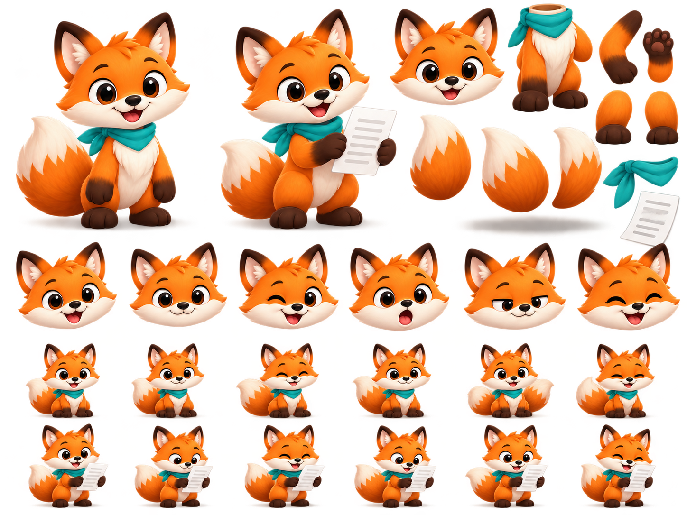
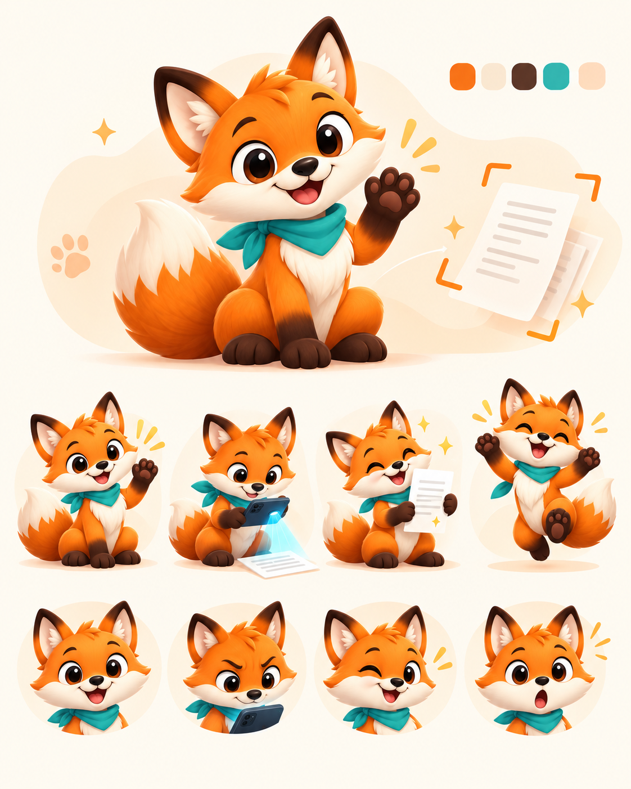
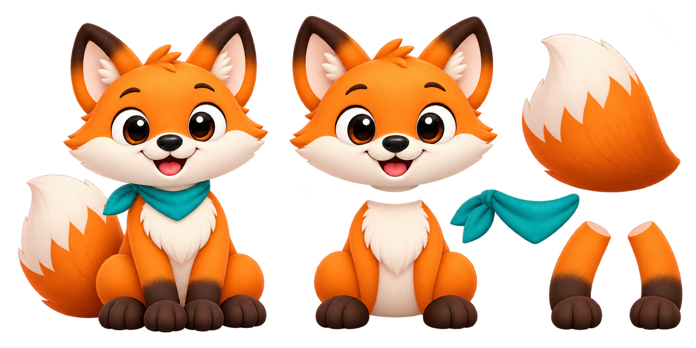
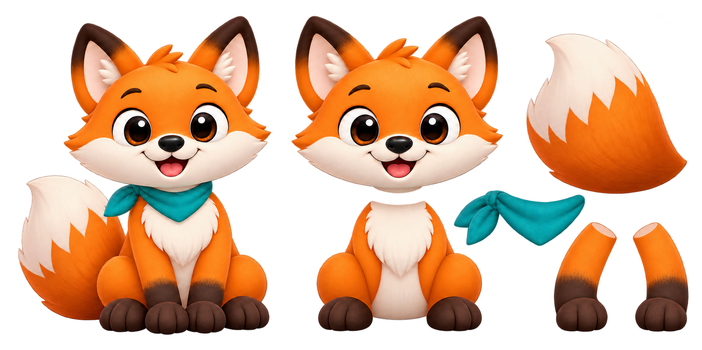

Esta seção confere a identidade e a legibilidade das pinturas atuais. Ela não demonstra articulação.
REPROVADO: o quadro de pata levantada contém anatomia incompatível e a personagem muda entre quadros.
Arraste o controle para examinar os quatro quadros e seus extremos. Reproduzir serve apenas para diagnóstico.

Atlas 1. Duas patas já pintadas no torso e duas adicionais soltas; fundo colorido sem transparência útil nas áreas internas. REPROVADO

Atlas 2. A correção ainda deixou patas no torso além das peças separadas; proporções e encaixes não reproduzem o master. REPROVADO

Cels 1. Não depende de rig, mas o gesto acrescenta uma pata e altera a personagem. REPROVADO

Referência recebida 1. Mostra a intenção de separar partes e expressões. Contém outras proporções, várias caudas e resíduos coloridos no alfa; não é a fonte aprovada.

Referência recebida 2. Ajuda a comunicar expressão e gestos de scan/leitura/sucesso, mas é uma prancha de conceito, não um arquivo de partes articuláveis.

Atlas 3. Usa as duas referências em conjunto, mas mantém membros no torso e também em peças avulsas. REPROVADO

Atlas 4. A edição removeu os braços do torso, mas as peças soltas têm comprimento e ombros incompatíveis, e o atlas ainda contém resíduos no alfa. REPROVADO